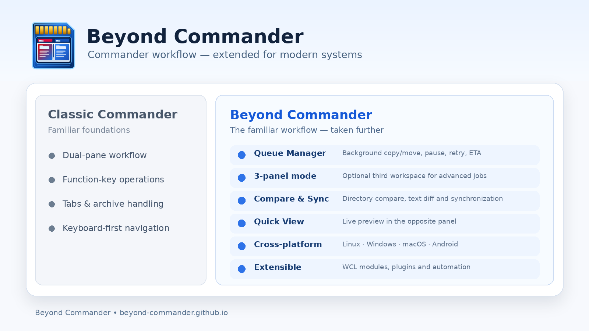

| Windows | macOS | Android | Linux | |||
|---|---|---|---|---|---|---|
| WCX | ✓ | △ | △ | △ | Official catalogue ↗ | |
| WFX | ✓ | △ | △ | △ | Official catalogue ↗ | |
| WLX | ✓ | △ | △ | △ | Official catalogue ↗ | |
| WDX | ✓ | △ | △ | △ | Official catalogue ↗ |
WCL modules
This block is ready for direct links to Beyond Commander/community WCL modules as they are published.